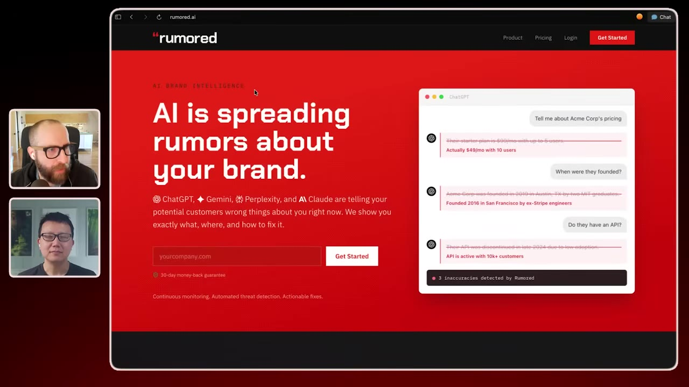
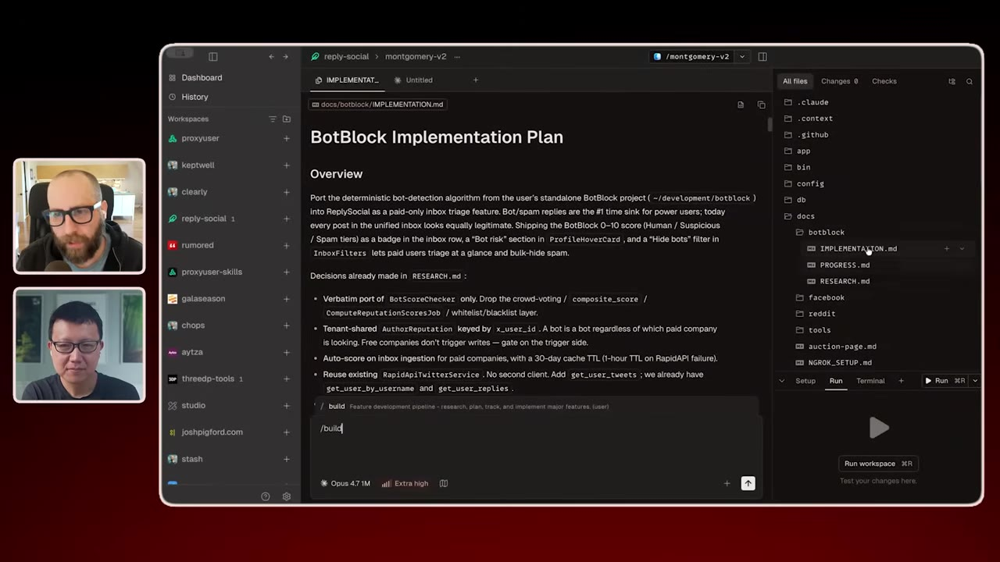
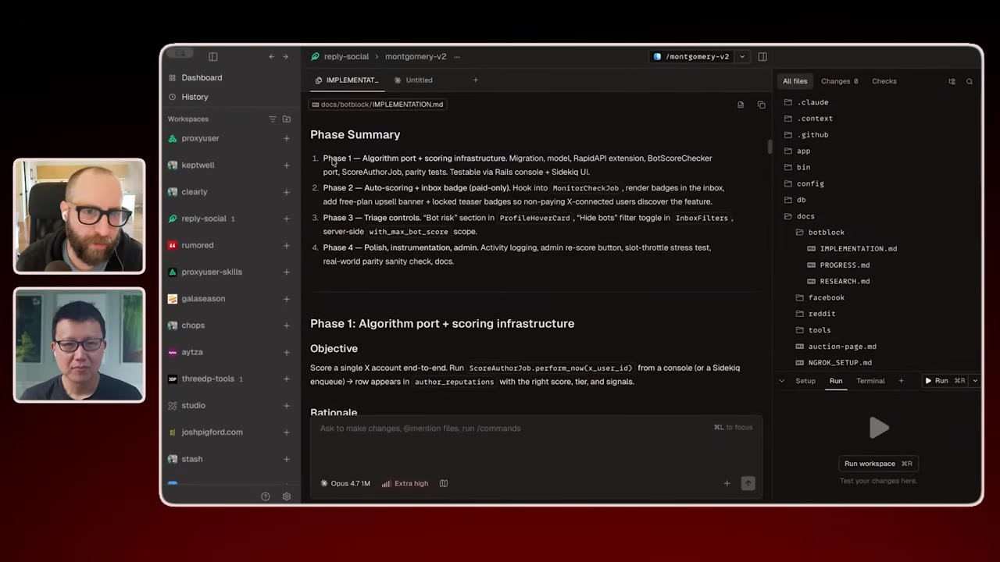
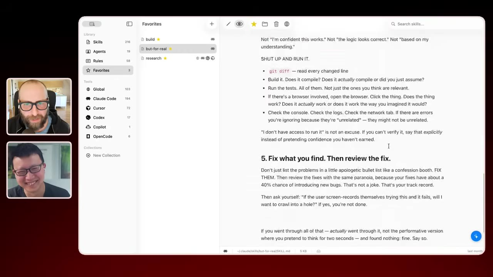
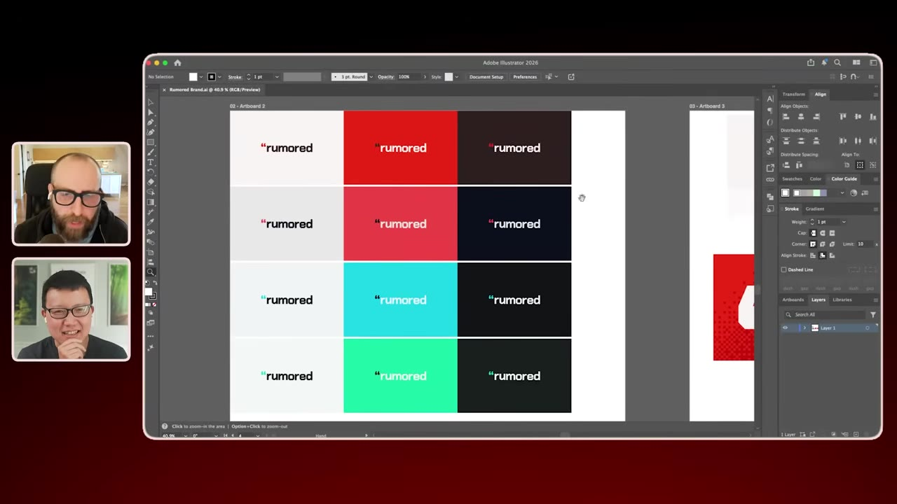

How Josh Pigford ships five AI products at once
Josh Pigford sold Baremetrics for $4M and now runs at least five AI products in parallel. He walks through the skills, worktrees, and adversarial review passes that let one person build like a team — and why he ships within 24 hours.
Watch on YouTubeThe short version
- One open-source build skill drives every feature: research doc, then an implementation spec split into user-testable phases, each its own PR.
- Each phase runs in a fresh Conductor worktree — clean context means fewer hallucinations, and worktrees double as rollback save points.
- Opus does the bulk of the building; a GPT review pass and a "But For Real" skill each catch three to five bugs Opus missed.
- A self-updating CLAUDE.md plus a learnings skill distill every "no, that didn't work" exchange into rules so the model stops repeating mistakes.
- Build the whole product first, then write marketing copy from the real feature set. Launch within 24 hours. Landing-page email lists are a distraction.
01 · The portfolio
Five products, all live
Josh Pigford sold Baremetrics for $4M after seven years on one product. He's done with one product. He now runs at least five AI tools at once: Proxy User (synthetic users that drive real browsers to QA your app and screen-record what breaks), Rumored (catches LLMs hallucinating about your brand so you can fix the copy, blog posts, or schema), Reply Social, and a tool he built after his mom's stage-four cancer diagnosis to keep family synced on her medical documents.

I was tired of working on one thing for seven years. I'm desperate to constantly learn new things, and I find myself limited if I have to focus on one thing.— Josh Pigford
02 · The build skill
Research first, then a spec
Every feature runs through one open-source build skill with separate instruction sets for research, planning, and implementation. He starts by pointing it at a goal — "build this BotBlock implementation into Reply Social" — and the first output is a research document: it reads his old codebase, merges in the target codebase, and works out the high-level technical shape, the API calls, what to carry over and what to drop.

03 · Phases
Every chunk is a PR you can test
The implementation doc breaks the work into phases — sometimes four, sometimes thirty-plus. Each phase is a separate branch and a separate pull request, deliberately small enough that Pigford can personally test it. "Build phase one" kicks off deeper work: web search for how competitors built the feature, fresh docs via Context7, a UI design pass on colors and components. A progress file records what got done and what the model learned, so later phases can reference earlier ones.

I think of a worktree as a shippable thing. It needs to be self-contained — partly context, but a lot of it is rolling back. It gives me checkpoints I can roll back to.— Josh Pigford
04 · Two reviewers
Opus builds, GPT and "But For Real" tear it apart
Opus does the bulk of everything — all the planning, the first pass. Then Pigford runs an adversarial review pass with a GPT model inside Conductor, which "invariably finds three to five bugs that Opus overlooked." It's the same logic as a second engineer reviewing a PR — another set of eyes that says "this isn't how I'd do it."

05 · Adversarial skills
Bully the model into finding its own bugs
Beyond the GPT pass, Pigford has a "But For Real" skill that he runs after the plan is implemented. It bullies the model — tells it that it almost certainly screwed something up and to go back over everything again. It finds another three to five bugs. A separate learnings skill reviews the whole worktree and the actual session, including every "no, that didn't work" he had to repeat, and distills it into rules added to a constantly-updated CLAUDE.md so the model stops repeating mistakes. He iterated the skill itself in Chops, his open-source Mac app for editing skill files.

It's shocking how good it is. And it kind of feels good — when you're really frustrated how it keeps breaking stuff. It's a machine, but I'll end up typing in all caps. Like it cares.— Josh Pigford
06 · Design
Name and logo before any code
Pigford's design process starts outside the editor entirely. He needs a name first, then a logo — done 99% of the time by hand in Adobe Illustrator with the pen tool, cycling through a thousand fonts. The color scheme falls out of that. For Rumored, the concept was quotation marks — LLMs quoting your brand incorrectly — so he hunted for typefaces with interesting quote marks and landed on a deep orange. Only then does he hand the AI the colors and SVGs and jump into code. Marketing copy comes last, generated from the real feature set after the app is built.

That's where I end up landing — and I've designed or built nothing. It's just brand stuff.— Josh Pigford
07 · Launch
Build the whole thing, ship it same day
Because building is cheap now, Pigford skips the validation theater. No landing-page email list to "translate into demand" — he calls it a distraction. He builds the entire product, ships it, and watches what happens. Some products land to silence, and that's fine: an itch only he has doesn't invalidate the itch, it just might not cover server costs. The real test is whether people pay enough to keep the servers on; if not, he refunds recent months and shuts it down.
As humans we tend to delay by building a landing page where we collect email addresses and try to translate that into demand. It's a distraction. So I just suck it up, build the thing, and shove it out there.— Josh Pigford
08 · Advice
Make mistakes as fast as you can
For the wave of new builders without 25 years of scar tissue, Pigford's advice is to fail fast. "Vibe coding" gets used as a slur, but it's fantastic that anyone is building anything, and the only way to learn what not to do is to do it wrong. AI-assisted coding reduces mistakes — the idea that mistakes didn't exist pre-AI is insane. His edge isn't the tools; it's knowing the general shape of how things should work, so he gets to a shippable point fast.
Fail fast
The only way to learn what not to do is to do it wrong — then recognize the mistake so you don't repeat it.
Ship to learn
You build on your own assumption of the problem; you can't know how it's different for someone else until they're in there.
Find him
Twitter @shpigford and his blog everydayisayear.ai.